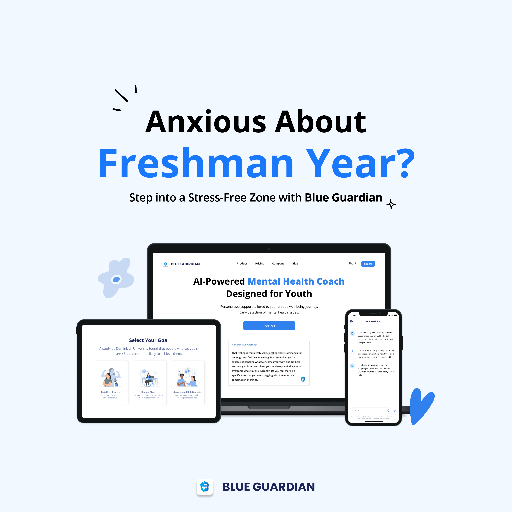
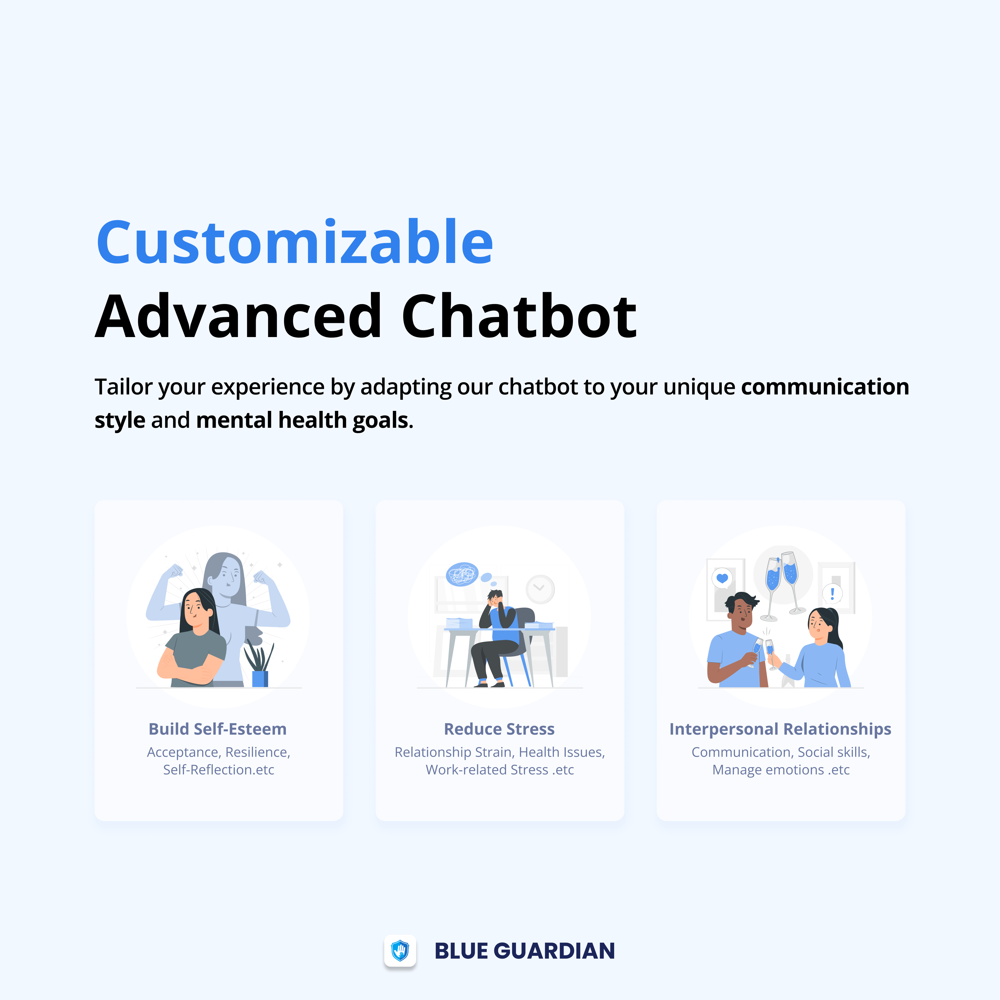
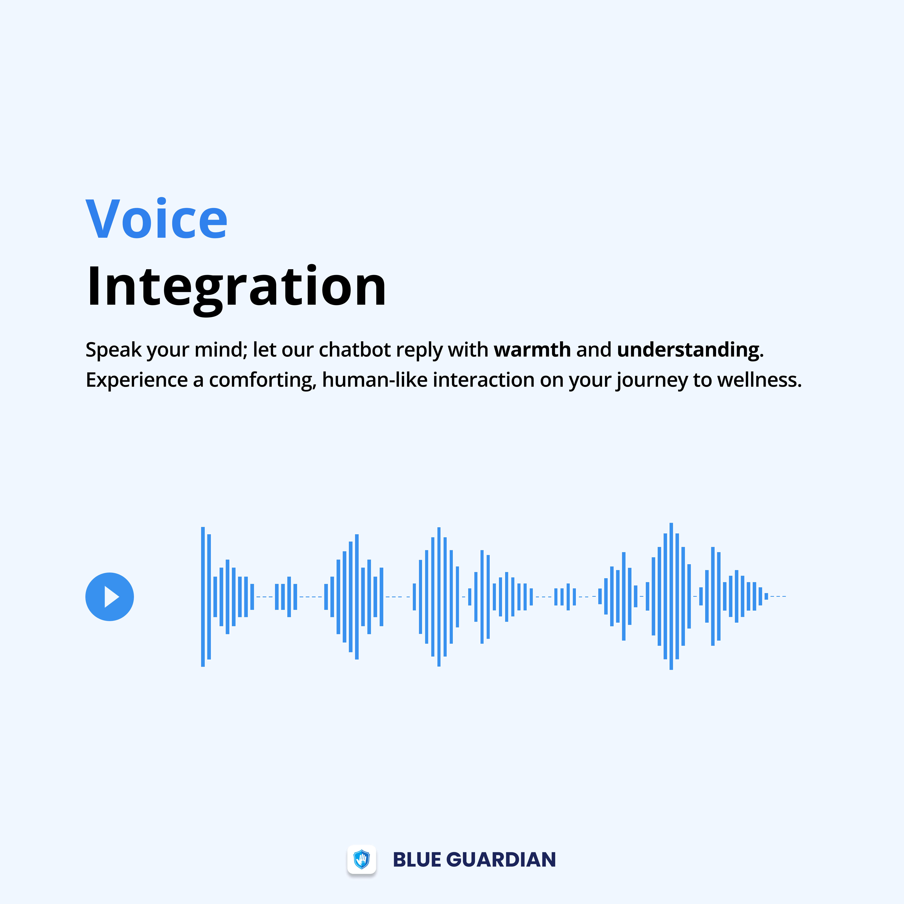

Blue Guardian is now closed after two years of operation. The product and website are no longer active, but i had a great time building it and learned a lot throughout the process!
In late 2023, I joined Blue Guardian as the sole founding designer to build a generative AI wellness platform for youth. Over an 8-month cycle, i owned the product's end-to-end user experience, designing the core conversational interface and executing a zero-budget growth strategy to acquire our initial users.
Problem
Traditional clinical care is restricted by high costs and long waitlists. On top of that, social stigma creates a massive psychological barrier, causing most people to give up before taking the first step to look for help.
In Canada, 26% of youth report poor or fair mental health, but more than 1 in 3 who need support never receive it.
Statistics Canada & CIHI, 2023-2024
Blue Guardian wasn't built to fix the system. It was built for the moment before people decide to try. We focused on the friction occurring before clinical care even becomes an option: the lack of a low-stakes, accessible space where young people can reach out to support.
Decision 01
The Wrong Tone
By 2023, general-purpose LLMs were increasingly being used for mental health support.
Common Sense Media, 2024
However, most AI models are not optimized for emotional contexts. They rely on a rigid response style that fails to adapt to users' emotional states. Someone who's panicking and someone who just needs a push have completely different needs. Applying one default tone creates an immediate mismatch that triggers user drop-off.
The well-intentioned provision of support may backfire and lead to worse outcomes when the supportive behavior doesn't match the needs of the recipient.
Selcuk & Ong, Health Psychology, 2013
This limitation created the core product gap. Blue Guardian offered different response modes based on emotional context, letting the conversation surface which one fit rather than asking users to decide upfront before interacting.
User
Message
Emotion
Detected
Response
Options
AI
Adapts
Other AI goes directly from step 1 to a fixed-tone response.
Decision 02
The Borrowed Trust
With no advertising budget, reaching our initial users felt nearly impossible, especially since the target audience are rarely proactive about seeking help. If they weren't going to find us, how could we find them?
User research pointed to a consistent pattern: people are more likely to seek support in environments they already feel comfortable in. That shaped how we thought about the channel.
We reached out to campus peer accounts that were student-run, free to partner with, and followed by thousands of incoming students. I designed marketing assets for these partnerships.



We acquired 300+ users within the first weeks of launch, with 0 spend on traditional marketing.
Decision 03
Designing the First 30 Seconds
Acquiring users was only the first challenge. The next question was whether they'd come back.
Early onboarding sessions showed that users made trust decisions extremely quickly, especially in emotionally vulnerable moments. If the experience felt overwhelming, clinical, or emotionally cold, engagement dropped almost immediately.
When brand logos were blue, 74% of participants classified the brand as trustworthy, compared to just 50% for red.
Su, Cui & Walsh, Journal of Marketing Theory and Practice, 2019
The interface was intentionally designed to reduce emotional friction during onboarding. Soft contrast, rounded components, and calmer visual hierarchy helped the product feel more approachable during the first interaction.

Users consistently described the onboarding experience as approachable rather than clinical. This friction reduction served as a direct lever for early retention, transforming visual design into a product decision rather than just an aesthetic choice.
The Outcome
Blue Guardian launched and reached 300+ users within weeks, with zero advertising spend. The product was later featured in Maclean's for its approach to AI-driven youth mental health support.
Meet the 22-year-old CEO using AI to boost kids' mental health
Maclean's, 2024
Read articleReflections
Trust comes before value
Users don’t experience value unless they stay long enough to find it. Blue Guardian reinforced that trust isn’t something layered onto a product after it’s built. It shapes whether users engage with the product in the first place.
Distribution shapes adoption
A product can’t create impact if users never encounter it. This project pushed me to think beyond features and consider where trust already existed, and how distribution could become part of the user experience itself.
Not every important decision is a feature
Some of the most consequential decisions weren’t new capabilities. They influenced discovery, onboarding, and trust. Working on Blue Guardian reminded me that product success is often shaped by the experience around the feature, not just the feature itself.